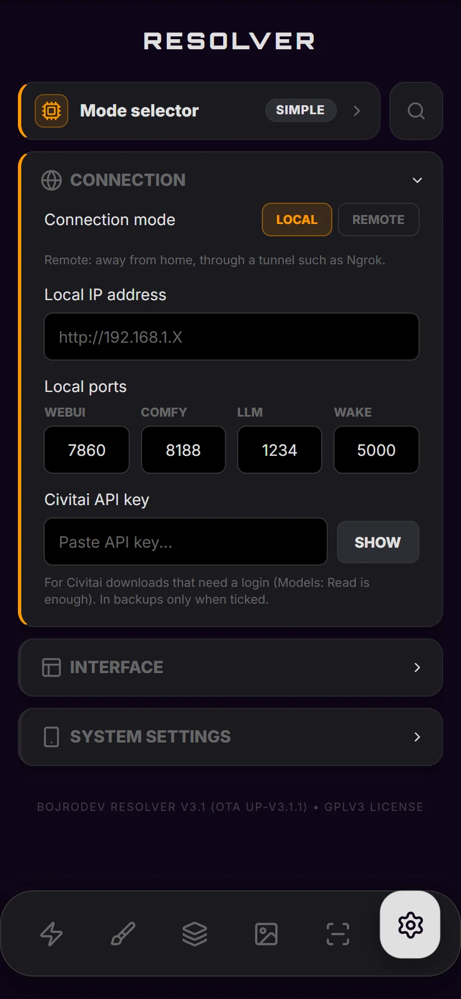

Docs / Start
Getting Started
From nothing to your first image in about ten minutes: install the app, let Forge on your PC accept the phone, connect, and generate.
Tick each step in the checklist as you finish it; it’s kept in this browser and marks the steps below as done.
What you need
models/Stable-diffusion folder, for SDXL, Flux or another model tab.Install the app
- Download the APKGet
Resolverv3.0.apkfrom the Releases page on GitHub. - Install itOpen the file on your phone. Android may ask you to allow installing apps from your browser or file manager; allow it for that app.
- Updating later?Install the new APK over the old one. Don’t uninstall first: uninstalling deletes your History, settings, LoRA data, styles and wildcards.
Android stores the app’s data with the app. Installing over it keeps everything; uninstalling removes it all. To be safe, make a backup first in Config → System Settings → BACK UP.
Set up Forge on your PC
By default Forge only accepts connections from the PC itself. Three launch options let your phone in:
--listen- Accept connections from other devices on your network (your phone), not only from the PC.
--api- Turn on Forge’s API, which is how Resolver talks to it.
--cors-allow-origins *- Allow requests that come from an app rather than from Forge’s own web page.
Pick how you start Forge to see where they go:
- Add the options, then restart ForgeClose Forge completely and start it again so the options take effect.
- Allow it through the firewallThe first time, Windows may ask whether Python can use the network. Choose Allow for private networks. (If you missed it, see Connection problems.)
- Check it started rightForge’s window should say it’s running on
http://0.0.0.0:7860. The0.0.0.0means it’s listening to your network, which is what you want.
Set up ComfyUI (optional)
Only needed for the ComfyUI tab. Add these to ComfyUI’s launch command, then restart it:
--listen --enable-cors-header *ComfyUI uses port 8188, which is already the app’s default. The ComfyUI tab is hidden until you turn it on in Config → Interface → Visible tabs.
Find your PC’s IP address
The app needs your PC’s address on your home network: four numbers with dots, usually starting with 192.168. or 10..
- Open Command PromptPress Win + R, type
cmdand press Enter. - Run ipconfig
ipconfig
- Read the IPv4 AddressUnder your Wi-Fi or Ethernet adapter, find IPv4 Address, for example
192.168.1.20.
- Open System Settings → NetworkSelect Wi-Fi or Ethernet, then Details.
- Read the IP addressIt’s listed as IP address. Or in Terminal:
ipconfig getifaddr en0
- Open a terminal and run
hostname -I
- Use the first addressThe one starting with
192.168.or10.
Routers can give your PC a different address after a restart. If the app suddenly can’t connect, check the IP again. Setting a “reserved” or “static” IP for your PC in your router’s settings stops it changing.
Connect the app
- Open ConfigTap the gear at the right end of the dock.
- Open ConnectionIt’s the first section. Leave LOCAL selected.
- Enter your PC’s addressIn Local IP address, type it with
http://in front, e.g.http://192.168.1.20. - Check the portsLeave the defaults unless you changed them on the PC:
WEBUI 7860 Forge · COMFY 8188 ComfyUI · LLM 1234 Magic Prompt · WAKE 5000 Dev Power - Go back to Generate and tap INITIALIZE ENGINEThe big button at the top. Settings save as you type, and from then on the app connects by itself when it starts.

Connection helper
Type your PC’s address to check it and see exactly what to enter:
What INITIALIZE ENGINE tells you
The button changes as the app reaches Forge and asks it for its list of models:
- INITIALIZE ENGINE
- Not connected yet. Tap to connect.
- INITIALIZING...
- Reaching Forge.
- INITIALIZED
- Connected. The checkpoint list fills in and you can generate.
- FAILED
- Forge didn’t answer. A window shows why; see Connection problems.
Your first image
- Pick a model tabUnder the top card: SDXL, ANIMA, QWEN, FLUX or KREA. Choose the one that matches your checkpoint.
- Choose a checkpointTap Active Checkpoint and pick one. (It says “Link first” until the app is connected.)
- Write a promptDescribe the picture, e.g.
a cozy cabin in a snowy forest, warm light, highly detailed. Add what you don’t want in Negative. - Tap GENERATEAt the bottom of the tab. Progress appears on the button, and the image appears below it (and in History).
You can switch apps or turn the screen off: generation carries on and shows its progress in your notifications.

Connect from anywhere (Remote mode)
Away from home, your phone can’t see your PC’s home address. A tunnel gives Forge a public https:// address instead. Run one on the PC, then switch the app to REMOTE.
Install ngrok, sign in once, then run:
ngrok http 7860
Copy the https://….ngrok-free.app address it shows.
Install cloudflared, then run:
cloudflared tunnel --url http://localhost:7860
Copy the https://….trycloudflare.com address it shows.
- Switch to RemoteIn Config → Connection, tap REMOTE.
- Paste the address into Forge URLThe whole thing, starting with
https://. If you also use Dev Power remotely, tunnel port5000the same way and paste it into Dev Power (Wake) URL. - Behind Cloudflare Access?If your tunnel is protected by Cloudflare Zero Trust, turn on Cloudflare Zero Trust and paste your service token’s Client ID and Client secret. The app sends them with every request.
Remote mode has fields for Forge and Dev Power. Magic Prompt (your local AI model) uses the Local address only.
Anyone with the tunnel address can use your Forge. Don’t share it publicly, and close the tunnel when you’re done. Cloudflare Zero Trust adds a login in front of it.
Setup checklist
Ticks are saved in this browser, and also mark the steps above as done.
Connection problems
- “Connection Error: No URL found”
- The address is empty. Fill in Local IP address (Local) or Forge URL (Remote) in Config → Connection.
- FAILED, or it waits forever
-
- Check Forge is running, and that it was restarted after adding the options.
- Check the phone and PC are on the same Wi-Fi (not mobile data, not a guest network).
- Open
http://YOUR-IP:7860/docsin the phone’s browser. If it doesn’t open, the problem is between the phone and the PC, not in the app. - Let Python through the Windows firewall: Windows Security → Firewall → Allow an app → tick Python for Private.
- It worked yesterday
- Your PC’s IP probably changed. Find it again (see above), or reserve it in your router.
- Remote: errors or a web page instead of images
- Make sure you pasted the full
https://address and the tunnel is still running. Free tunnel addresses change each time you start them.
- Generation stops when the screen is off
- Allow Resolver to ignore battery optimization: Config → System Settings → IGNORE BATTERY OPTIMIZATIONS.